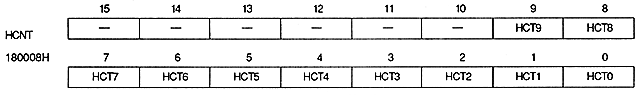
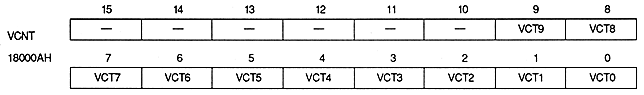

VRAMSZ | VRAM capacity |
0 | 4Mbit |
1 | 8Mbit |

H counter value bit : H counter bit (HCT9 to HCT0), bits 9 to 0
Graphic | HCT9 | HCT8 | HCT7 | HCT6 | HCT5 | HCT4 | HCT3 | HCT2 | HCT1 | HCT0 |
Normal | H8 | H7 | H6 | H5 | H4 | H3 | H2 | H1 | H0 | Disable |
High Resolution | H9 | H8 | H7 | H6 | H5 | H4 | H3 | H2 | H1 | H0 |
Dedicated Normal | Disable | H8 | H7 | H6 | H5 | H4 | H3 | H2 | H1 | H0 |
High Resolution | Disable | H9 | H8 | H7 | H6 | H5 | H4 | H3 | H2 | H1 |
